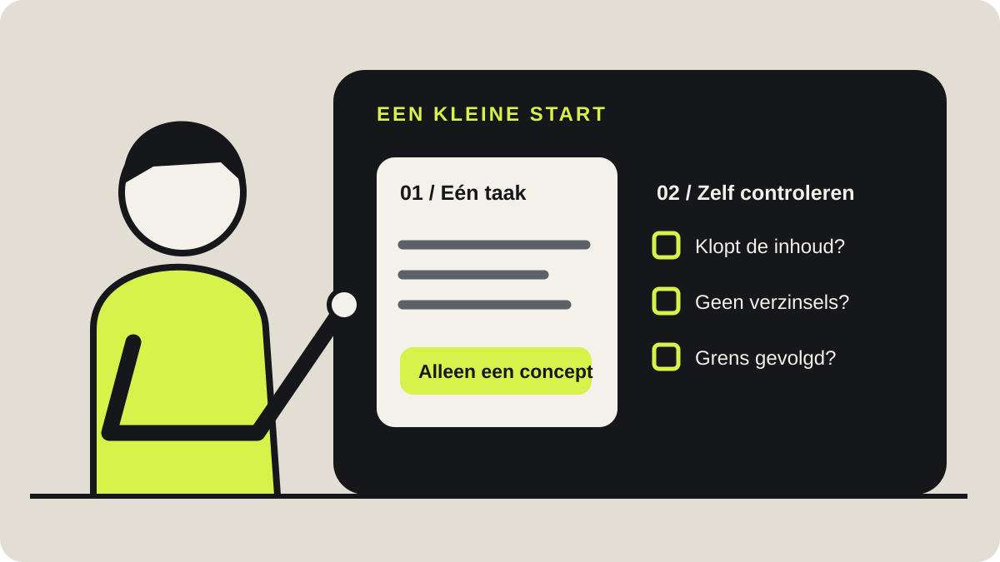

Beginnen met Instinct: geef één taak uit handen
10 oktober 2026
Een AI-assistent gebruiken begint met een gewone vraag. Toch zit de belangrijkste keuze daarvoor: welk werk willen we werkelijk uit handen geven? Wie met Instinct begint, heeft meer aan één afgebakende taak dan aan een lange lijst mogelijkheden.

Bij Klaarwijs kiezen we daarom voor een rustige start. We beschrijven wat klaar moet zijn, geven alleen de informatie die daarvoor nodig is en spreken af waar de assistent stopt. Zo kunnen we beoordelen of de hulp bruikbaar is, zonder meteen onze hele administratie over te dragen.
Dit artikel gaat over die eerste stap. We leggen uit wat Instinct is, hoe we een opdracht formuleren en hoe we een eerste oefening beoordelen. De voorbeelden zijn zelfbedachte opdrachten, geen uitgevoerde praktijktests. We beloven dus geen tijdwinst of foutloze resultaten.
Wat is Instinct?
Instinct beschrijft zichzelf op zijn website als een persoonlijke assistent die we kunnen berichten of bellen. De website noemt onder meer afspraken regelen, boodschappen bestellen en een uitstapje plannen als mogelijke toepassingen. Dat zijn voorbeelden van wat het product aanbiedt, geen garantie dat iedere opdracht in iedere situatie lukt.
Voor een beginner is vooral het contact belangrijk. We hoeven onze vraag niet als programmeercode te schrijven. We kunnen in gewone taal uitleggen welk resultaat we zoeken, welke informatie erbij hoort en welke grenzen we willen stellen.
Een recente praktijkbespreking van The Verge, gepubliceerd op 9 oktober 2026, beschrijft het gebruik via berichten, waaronder WhatsApp. De recensent bespreekt zowel geslaagde taken als een gemiste voorwaarde bij het zoeken naar zwemlessen. Eén ervaring bewijst geen algemene betrouwbaarheid, maar laat wel zien waarom een uitkomst en een gecontroleerde uitkomst verschillen.
Wij zouden Instinct daarom benaderen als hulp bij concrete taken. Beginnen met een beperkte opdracht geeft ons iets dat we zelf kunnen beoordelen. Een belofte als "regel mijn hele bedrijf" is daarvoor te groot: we kunnen nauwelijks vaststellen wat daar precies onder valt.
Kies werk waarvan we de uitkomst herkennen
Een goede eerste taak heeft een duidelijk begin en einde. Denk aan een korte samenvatting van een openbare tekst, een concept op basis van eigen notities of een overzicht van vragen die nog onbeantwoord zijn. Kies iets waarvan we zonder extra onderzoek kunnen zien of het antwoord aansluit.
Onze voorkeur is een taak zonder gevolgen voor anderen. Een conceptmail kunnen we lezen voordat iemand hem ontvangt. Een samenvatting kunnen we naast de oorspronkelijke tekst leggen. Bij zo'n eerste oefening hoeven we nog niets te boeken, te betalen of te verzenden.
Een minder geschikte start is een opdracht die vakkennis vraagt die we zelf niet hebben. Een overtuigend antwoord over een ingewikkeld contract maakt de inhoud niet vanzelf juist. Als we het resultaat niet kunnen beoordelen, leren we weinig over de kwaliteit van de hulp.
We hoeven ook niet direct allerlei accounts te koppelen. Voor een oefening met een verzonnen tekst is geen toegang tot onze mailbox nodig. Eerst bepalen we welke taak we willen doen; daarna bekijken we of daarvoor extra toegang nodig is.
Schrijf op wat klaar betekent
"Help me met mijn administratie" beschrijft een onderwerp. Het vertelt nog niet wat er moet liggen als het werk klaar is. Een afgebakende opdracht noemt bijvoorbeeld een lijst, een samenvatting of een concept, met een duidelijke omvang.
Wij gebruiken vier vragen als schrijfhulp: wat moet het opleveren, voor wie is het bedoeld, wat mag niet en wanneer is het klaar? Die vragen zijn een praktische keuze van Klaarwijs. Ze zijn geen verplichte Instinct-indeling en we doen geen uitspraak over hoeveel beter een antwoord daardoor wordt.
Bij een samenvatting kan het resultaat vijf punten zijn. Het publiek kan een collega zijn die de tekst nog niet heeft gelezen. De grens kan zijn dat er geen aanvullende feiten bij mogen. Klaar betekent dan dat ieder punt terug te vinden is in de aangeleverde tekst.
Een bruikbare opdracht luidt bijvoorbeeld: "Vat deze tekst samen voor iemand die het onderwerp niet kent. Gebruik maximaal vijf punten. Voeg geen feiten toe. Zet onderaan wat de tekst niet uitlegt." Zo hebben we een concrete maatstaf voor het resultaat.
Ook een deadline hoort alleen in de opdracht als die ertoe doet. "Voor mijn overleg" is onduidelijk zonder tijdstip. Gaat het om een echte planning, schrijf dan de datum en tijd erbij en controleer of de assistent hetzelfde moment heeft begrepen.
Geef informatie, geen vrijbrief
Een assistent kan alleen met onze notities werken als we ze delen, of met een account werken als daarvoor toegang beschikbaar is. Welke toegang nodig is, hangt af van de opdracht. Laat eerst uitleggen wat ontbreekt in plaats van alvast overal toestemming voor te geven.
In de praktijkbespreking van The Verge staat dat Instinct diensten kan koppelen en een beveiligde invoerlink kan aanbieden voor inloggegevens. Voor onze eerste taak houden we het eenvoudiger: we werken met verzonnen gegevens die we rechtstreeks kunnen aanleveren. Dat beperkt wat we hoeven te delen.
Wachtwoorden horen niet in een gewone chat. Als een taak toegang vereist, vragen we naar de daarvoor bedoelde invoerroute. We beoordelen ook of die toegang past bij onze opdracht en of we dat account voor deze toepassing willen gebruiken.
Voor werkgegevens is nog een andere vraag nodig: mogen we deze informatie delen? Een klantdocument blijft een klantdocument als we het aan een assistent geven. Bij twijfel gebruiken we een volledig verzonnen voorbeeld en vragen we binnen ons bedrijf welke afspraken gelden.
Wij vinden een kleine proef met fictieve gegevens een betere kennismaking dan een proef met een echte klantmail. We kunnen dezelfde instructie oefenen zonder namen, adressen of vertrouwelijke afspraken te gebruiken. Pas daarna besluiten we of een echte toepassing passend is.
Spreek het stopmoment af
Een concept schrijven en een bericht versturen hebben verschillende gevolgen. Voor ons eerste gebruik willen we dat verschil expliciet maken. We zetten daarom in de opdracht dat de assistent alleen voorbereidt en niets naar anderen verstuurt.
Dat geldt ook bij andere handelingen. Een lijst met mogelijkheden is nog geen boeking. Een boodschappenlijst is nog geen bestelling. Een voorstel voor een afspraak is nog geen uitnodiging aan de mensen die erbij horen.
We presenteren dit als een afspraak die we zelf maken, niet als een algemene productgarantie. Een beginner hoeft niet te vertrouwen op een stilzwijgend stopmoment. Schrijf het op: "Maak alleen het concept. Vraag mij voordat je iets verstuurt, boekt, betaalt of verwijdert."
Bij een latere goedkeuring controleren we wat er precies wordt goedgekeurd. Bij een mail gaat het om de tekst én de ontvanger. Bij een aankoop gaat het ook om het bedrag en de voorwaarden. Een algemeen "prima" kan onduidelijk zijn als er meerdere voorstellen liggen.
Het doel is geen eindeloze bevestiging voor ieder klein detail. Het doel is dat we vooraf weten welke stap gevolgen heeft. Binnen onze eerste oefening is dat eenvoudig: er gaat niets naar buiten, dus we beoordelen alleen de voorbereiding.
Eén oefening, helemaal uitgewerkt
Voor onze eerste kennismaking gebruiken we een fictieve aanvraag aan een tekstschrijver. Het voorbeeld bevat geen klantgegevens en vraagt geen toegang tot een account. We weten vooraf welke informatie aanwezig is en welke informatie ontbreekt.
De aanvraag luidt: "We zoeken iemand die drie teksten voor onze website kan schrijven. De teksten zijn bedoeld voor nieuwe bezoekers. We willen graag een voorstel ontvangen. Over de lengte, planning en het beschikbare materiaal hebben we nog niets afgesproken."
We vragen Instinct om een korte conceptreactie. Het resultaat moet de aanvraag erkennen en drie vragen stellen: hoeveel woorden gewenst zijn, wanneer de teksten nodig zijn en welk materiaal beschikbaar is. Een prijs of leverdatum mogen niet worden ingevuld.
Deze opdracht kunnen we rechtstreeks gebruiken:
"Maak een conceptreactie op de fictieve aanvraag hieronder. Schrijf vriendelijk en zakelijk, maximaal 120 woorden. Bevestig dat het om drie websiteteksten voor nieuwe bezoekers gaat. Vraag naar de gewenste lengte, deadline en het beschikbare materiaal. Bedenk geen prijs, planning of afspraken. Gebruik alleen de informatie uit de aanvraag. Verstuur niets. Geef onder het concept apart aan welke gegevens ontbreken. Aanvraag: We zoeken iemand die drie teksten voor onze website kan schrijven. De teksten zijn bedoeld voor nieuwe bezoekers. We willen graag een voorstel ontvangen. Over de lengte, planning en het beschikbare materiaal hebben we nog niets afgesproken."
Dit is een oefenopdracht, geen bewijs dat Instinct het gewenste antwoord zal geven. We hebben de uitkomst niet ingevuld. Dat maakt de oefening eerlijk: de lezer kan zelf zien wat er gebeurt en het antwoord naast de opdracht leggen.
Beoordeel het antwoord met vaste vragen
Na de oefening kijken we eerst naar de inhoud. Staat er werkelijk dat het om drie websiteteksten gaat? Worden lengte, deadline en beschikbaar materiaal gevraagd? Heeft het concept geen prijs of leverdatum toegevoegd? Deze controles kunnen we beantwoorden door opdracht en uitkomst naast elkaar te leggen.
Daarna beoordelen we de vorm. Is de reactie maximaal 120 woorden en klinkt ze vriendelijk en zakelijk? Een afwijking in toon is iets anders dan een verzonnen afspraak. We schrijven daarom apart op wat inhoudelijk fout is en wat we alleen anders zouden formuleren.
Tot slot kijken we naar de afgesproken grens. Voor deze oefening vragen we alleen een concept in de chat. Als het antwoord suggereert dat er al iets is verstuurd, moeten we dat ophelderen voordat we verdergaan. Een statusmelding is geen reden om onduidelijkheid te laten bestaan.
Noteer de gebruikte opdracht, de datum en het antwoord. Schrijf eronder welke controles slaagden en welke niet. We hoeven daar geen ingewikkeld rapport van te maken; een klein overzicht voorkomt dat een prettig klinkend antwoord de hele beoordeling bepaalt.
We meten bij deze eerste oefening geen tijdwinst. Daarvoor zouden we ook moeten weten hoeveel tijd dezelfde taak zonder assistent kost, inclusief lezen en verbeteren. Zonder die vergelijking blijft "dit bespaart tijd" een indruk die we niet als resultaat presenteren.
Verbeter één ding tegelijk
Als het antwoord niet voldoet, benoemen we de afwijking precies. "Dit is slecht" geeft weinig richting. "Je hebt een leverdatum toegevoegd terwijl die ontbreekt; haal die weg en stel er een vraag over" verwijst naar iets dat we kunnen controleren.
Wij zouden eerst de bestaande opdracht verbeteren voordat we meteen een andere toepassing zoeken. Misschien is een grens onduidelijk beschreven. Misschien heeft de assistent een duidelijke grens toch gemist. Door één wijziging tegelijk te doen, kunnen we zien wat het volgende antwoord anders doet.
Voeg ook geen regels toe die het probleem niet raken. Een uitgebreidere rolbeschrijving helpt ons niet automatisch bij een verzonnen prijs. De controle blijft dezelfde: komt die prijs uit de aangeleverde informatie? Zo houden we de beoordeling dicht bij de taak.
Na één bruikbare oefening kunnen we de opdracht bewaren als sjabloon. Bewaar daarbij de controles, niet alleen de prompt. Het sjabloon is pas nuttig als we later nog weten wat het resultaat moet bevatten en welke dingen er juist niet in mogen.
Maak van een vervolg een nieuwe afspraak
Soms willen we na een eerste taak ook een herinnering of een vervolgcontrole. Dan beschrijven we die apart. Een eenmalig concept maken is geen opdracht om iedere week nieuwe concepten te produceren.
Vraag bij een herinnering om bevestiging van het afgesproken tijdstip. Vraag bij een vervolgcontrole wat er wordt bekeken, wanneer de controle stopt en wat de assistent meldt. Laat ook aangeven of de gevraagde opvolging in onze situatie beschikbaar is.
Wij zouden hiermee wachten tot de eerste taak duidelijk is. Anders combineren we tekstkwaliteit, accounttoegang, planning en opvolging in één proef. Als er iets misgaat, is nauwelijks nog zichtbaar welk onderdeel we moeten verbeteren.
Begin klein, kies bewust
Onze mening is eenvoudig: een eerste ervaring met Instinct moet beoordeelbaar zijn. Een kleine opdracht met een zichtbaar resultaat leert ons meer dan een grote opdracht waarvan we niet kunnen nagaan wat er allemaal is gebeurd. We bouwen vertrouwen op met controleerbaar werk, zonder resultaten vooruit te beloven.
Gebruik daarom de fictieve aanvraag uit dit artikel als eerste oefening. Vergelijk het concept met de vier inhoudelijke eisen: drie websiteteksten, de gevraagde ontbrekende gegevens, geen prijs en geen leverdatum. Pas daarna beslissen we of we dezelfde soort taak met eigen materiaal willen doen.
Welke grens zouden we bij zo'n eerste opdracht zelf het belangrijkst vinden?
Fout gezien? Mail naar info@klaarwijs.nl.